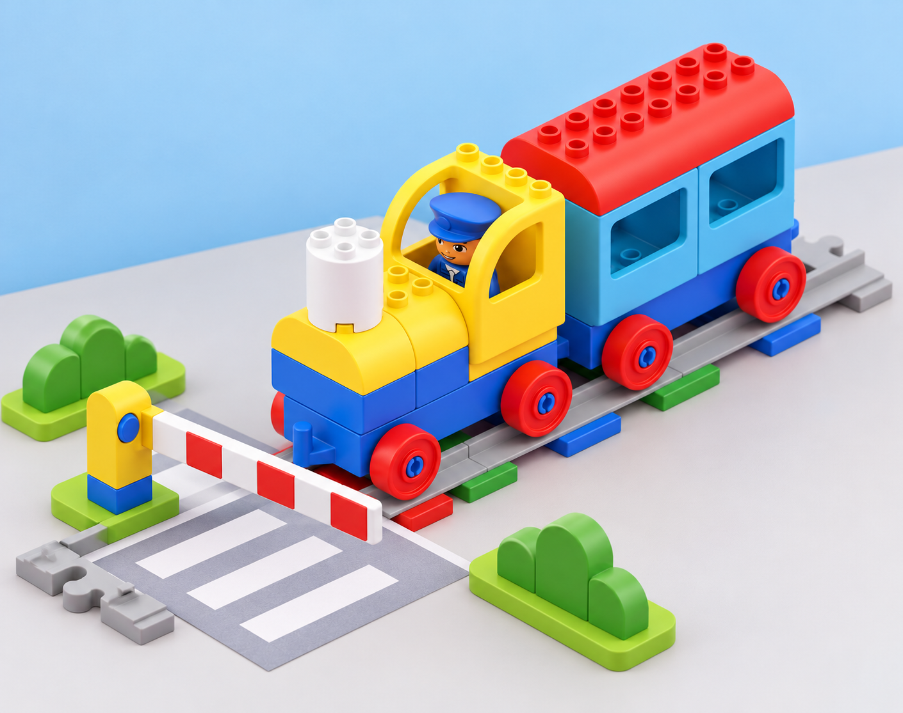
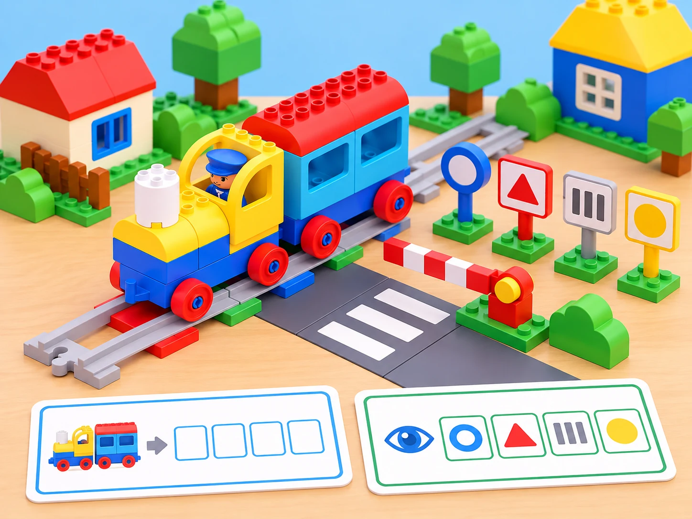

Un camí tranquil fins a l’escola
🏷️ Ciutat intel·ligent i accessibilitat
🌱 Situació, repte i intenció
🎯 Aprenentatges i vocabulari
- Interpretar símbols i descriure trajectes, bifurcacions i possibles incidències en una maqueta.
- Anticipar la resposta observada d’un maó d’acció i revisar la predicció amb una prova.
- Construir una explicació de ruta amb ordres, pictogrames i llenguatge espacial.
- Distingir una representació de joguina de les normes i senyals reals de circulació.
🧰 Materials i preparació
La lliçó oficial està pensada per a fins a quatre participants i usa el set Coding Express amb l’app. Prepareu el tren, vies suficients per a una bifurcació en Y, els quatre senyals de trànsit de la caixa i altres maons d’acció, figures o models de barri, targetes de construcció si en disposeu, paper i retoladors. Comproveu abans de la classe la connexió amb l’app i les funcions disponibles en cada botó; la versió concreta pot canviar quines incidències es poden representar.
Situeu la maqueta en una taula estable i manteniu cables i dispositius fora de la via.
Useu senyals reals només per mirar-los i identificar-los amb fonts educatives fiables. Les targetes inventades en aquesta activitat han de tindre una aparença diferenciada i dur l’etiqueta «senyal del nostre joc», per no confondre-les amb senyalització viària. No presenteu una interpretació infantil com a norma oficial. L’activitat es resol íntegrament dins de l’aula: no hi ha eixides al carrer, carreres, encreuaments simulats a escala humana ni situacions de perill.
📅 Seqüència didàctica
Observem senyals i acordem el joc segur (40 min)
Fase 1 · Activem i prediem
Inicieu una conversa curta sobre els senyals que l’alumnat recorda haver vist des d’un vehicle o acompanyat per una persona adulta. No demaneu que descriguen com creuar un carrer; centreu-vos en la funció general de recordar o comunicar informació.
Fase 2 · Explorem i construïm
Mostreu els quatre senyals de la dotació Coding Express, un per un. Observeu-ne forma i color abans de proposar una interpretació. El docent contrasta les idees amb informació fiable i explica qualsevol diferència entre la peça de joguina i un senyal real.

Fase 3 · Expliquem i registrem
Feu una targeta amb el senyal observat, la interpretació inicial i l’explicació contrastada o revisada. Marqueu quines parts són informació comprovada i quines són una regla inventada per al joc.
Fase 4 · Apliquem i millorem
Feu un joc tranquil de conducció dins d’una zona marcada de taula: les persones mouen una figura o el tren lentament i s’aturen davant d’algunes targetes. Una persona pot coordinar el trànsit amb senyals visuals de «continua», «redueix» o «atura’t», sempre com a regles inventades. Alterneu conducció i observació perquè totes les persones puguen veure què comunica cada targeta.
Fase 5 · Comprovem i reflexionem
Construïm la bifurcació i investiguem els maons (40 min)
Fase 1 · Activem i prediem
Abans de muntar, cada equip descriu una ruta completa: origen, bifurcació, ramal triat i destinació. Recordeu que les vies i la bifurcació són elements de la maqueta, no una representació exacta d’una carretera.
Fase 2 · Explorem i construïm
En grup menut, construïu una via en Y i col·loqueu dos o tres models de barri al costat de cada ramal: plaça, biblioteca o jardí, per exemple. Situeu alguns maons d’acció en llocs variats i registreu-ne la ubicació amb un dibuix senzill.
Fase 3 · Expliquem i registrem
Exploreu els controls de l’app en torns, d’un botó cada vegada. En passar cada maó, observeu si el tren s’atura, canvia de comportament o no mostra cap canvi. Anoteu «predicció / observació / què pensem ara».
Fase 4 · Apliquem i millorem
Si l’app mostra una incidència o el docent la proposa amb una targeta, descriviu-la sense dramatitzar-la: una destinació queda fora de servei en el joc, cal visitar una altra parada o el tren s’ha desviat. Cada grup tria una solució i la prova.
Fase 5 · Comprovem i reflexionem
Dissenyem un senyal de joc i expliquem la ruta (40 min)
Fase 1 · Activem i prediem
Useu els quatre senyals de la dotació en més d’un punt del trajecte i prediu si la història continuarà sent comprensible per a un altre equip.
Fase 2 · Explorem i construïm
Inventeu una targeta pròpia amb una forma i un pictograma fàcils de reconéixer. Escriviu-hi «senyal del nostre joc» i expliqueu què demana en aquesta maqueta. Col·loqueu-la al punt on penseu que serà útil.
Fase 3 · Expliquem i registrem
Executeu la ruta i demaneu a un altre equip que descriga què ha entés abans de sentir l’explicació dels autors. Registreu en una narració visual el trajecte: inici, bifurcació, incidència, decisió i destinació.
Fase 4 · Apliquem i millorem
Si el senyal no comunica la idea, canvieu un sol element —posició, contrast o símbol— i torneu a preguntar a un altre observador. Cada participant pot presentar el recorregut oralment, amb targetes o amb gestos.
Fase 5 · Comprovem i reflexionem
🧪 Evidències i avaluació
Observeu el procés amb quatre indicadors: interpreta o formula una pregunta sobre un senyal; descriu una ruta amb origen, bifurcació i destinació; anticipa i comprova la funció d’un maó; i explica com el seu senyal inventat ajuda a entendre l’escena de joc. El quadern conserva la targeta inicial, el mapa de la Y, el registre predicció/observació i el senyal propi revisat.
Valoreu la qualitat de l’observació i la claredat de la representació, no la precisió de les primeres interpretacions ni la rapidesa en conduir. Si l’app no està disponible, representeu els efectes observats prèviament pel docent amb targetes i figuretes i manteniu el repte de descriure, predir i revisar.
♿ Participació, accessibilitat i seguretat
Feu tota la proposta amb maqueta, fotografies i pictogrames tàctils; no cal eixir al carrer. Useu instruccions anticipades, contrast alt i una sola bifurcació visible cada vegada. Eviteu efectes sonors inesperats i permeteu observar sense tocar el tren. Repartiu rols de constructor/a, lector/a de símbols, operador/a de l’app i relator/a, amb rotació opcional; qualsevol persona pot assenyalar, usar comunicació augmentativa o dictar a una companya. Deixeu espai entre participants i manteniu el tren a velocitat baixa.
🔗 Referents i adaptació
Adapta Journey – Trouble on the Road: conversa sobre normes i quatre senyals del set, joc de conducció a zones marcades, construcció de la via en Y, exploració dels botons de l’app i els maons d’acció, resolució de problemes de trànsit i creació/col·locació de senyals o models propis. La situació del barri, les incidències, els mapes i les targetes són propis. La via només és una maqueta educativa; no ensenya normes completes ni substitueix formació viària.